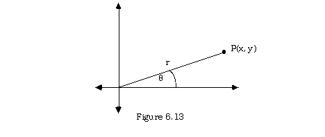
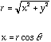
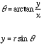
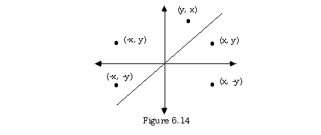
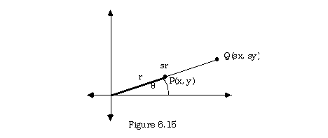
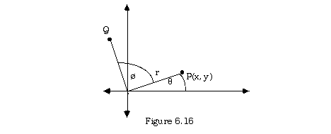
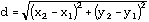
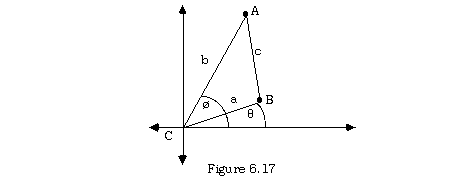
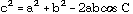

6.9 An Extended Example (Coordinate Geometry)
Example:
Write a library module to implement support for planar point coordinate geometry.
Discussion:
Points are represented in the plane by their horizontal and vertical coordinates (x, y). This representation can be rendered in Modula-2 as a one-dimensional array of length two.
TYPE
Point = ARRAY [1 .. 2] OF REAL;
Note that the word dimension in this context refers to the array, not to the geometry. There are several useful operations relating to single points. These fall into two main categories:
Computations:
Three of these will be considered here; they arise in connection with the line segment joining the point with the origin.

Both the length r of this line segment, and also the angle  that it makes with the positive x-axis are of interest in various problems. It may also be necessary to construct the rectangular coordinates (x, y) of a point from a knowledge of the length r and the angle (also called its polar coordinates). These are expressed as follows:
that it makes with the positive x-axis are of interest in various problems. It may also be necessary to construct the rectangular coordinates (x, y) of a point from a knowledge of the length r and the angle (also called its polar coordinates). These are expressed as follows:
 
Transformations:
These involve moving the point P according to some determined pattern. The first such patterns involve various reflections or symmetries. These can be done in the x-axis to yield (x, -y), in the y-axis to yield (-x, y), across the origin yielding (-x, -y), or in the line y = x producing (y, x). The possibilities are indicated in the figure 6.14 below:

The second type of transformation scales the point in such a way that the length of the line segment it defines is multiplied by some number, s called the scale factor. If this is done, the x-coordinate and y-coordinate of the new point Q are also multiplied by the same scale factor, but the angle is unchanged.

A third type of transformation on the point is via the segment it defines and consists of a rotation through an angle ø. The new point obtained is at the same distance r from the origin as the original, but its segment subtends an angle q + ø from the positive x-axis.

The fourth and last transformation is a simple shift or translation of the point by h units horizontally, and k units vertically. That is, the point that starts at (x, y) is transformed to the point (x + h, y + k).
Finally, in order to maintain the integrity of items of type Point as an abstract data type, it is necessary to make provision for client programs to assign values to (and obtain values from) the coordinates of a point without directly using the knowledge of its structure as an array. This concern for integrity of the ADT necessitates three more procedures: assign, abscissa, and ordinate.
Thus the abstract data type Point and the operations and transformations on it may be defined in Modula-2 as follows:
DEFINITION MODULE Points;
(* angles are measured in radians counterclockwise from the positive x-axis *)
TYPE
Point = ARRAY [1 .. 2] OF REAL;
PROCEDURE assign (x, y : REAL) : Point;
(* returns the abstract point with coordinates x and y *)
PROCEDURE abscissa (p : Point) : REAL;
(* returns the first, or x-coordinate of the point *)
PROCEDURE ordinate (p : Point) : REAL;
(* returns the second, or y-coordinate of the point *)
PROCEDURE abs (p : Point) : REAL;
(* returns the distance from the point to the origin *)
PROCEDURE arg (p : Point) : REAL;
(* returns the angle to the positive x-axis subtended by a line segment from the origin to the point measured in the range 0 to 2¼lt;¼gt; radians *)
PROCEDURE polarToRect (abs, arg : REAL) : Point;
(* returns the point with the given absolute value and argument *)
PROCEDURE reflectX (p : Point) : Point;
(* returns the reflection of the point in the x-axis *)
PROCEDURE reflectY (p: Point ) : Point;
(* returns the reflection of the point in the y-axis *)
PROCEDURE reflect0 (p : Point) : Point;
(* returns the reflection of the point in the origin *)
PROCEDURE reflect45 (p : Point) : Point;
(* returns the reflection of the point in the line y = x *)
PROCEDURE scale (p : Point; scaleFactor : REAL) : Point;
(* returns the point with the same argument as p and its absolute value multiplied by the scale factor *)
PROCEDURE rotate (p : Point; rotAngle : REAL) : Point;
(* returns the point with the same absolute value as p and with its argument increased by rotAngle *)
PROCEDURE translate (p : Point; deltaX, deltaY : REAL) : Point;
(* returns the point obtained by shifting the given point deltaX horizontally and deltaY vertically *)
END Points.
IMPLEMENTATION MODULE Points;
(* original by R. Sutcliffe
corrections by G. Tischer 1995 05 09 *)
FROM RealMath IMPORT
sqrt, arctan, sin, cos, pi;
PROCEDURE assign (x, y : REAL) : Point;
VAR
temp : Point;
BEGIN
temp [1] := x;
temp [2] := y;
RETURN temp;
END assign;
PROCEDURE abscissa (p : Point) : REAL;
BEGIN
RETURN p [1];
END abscissa;
PROCEDURE ordinate (p : Point) : REAL;
BEGIN
RETURN p [2];
END ordinate;
PROCEDURE abs (p : Point ) : REAL;
BEGIN
RETURN sqrt (p[1] * p[1] + p[2] * p[2]);
END abs;
PROCEDURE arg (p : Point) : REAL;
(* if both coordinates are zero, the angle is not defined, but this procedure will return zero. No errors are generated. *)
VAR
temp : REAL;
BEGIN
IF p[1] = 0.0
THEN
IF p[2] > 0.0 (* case of point on positive y-axis *)
THEN
RETURN pi / 2.0;
ELSIF p[2] < 0.0 THEN
RETURN 1.5* pi (* case of point on negative y-axis *)
ELSE
RETURN 0.0;
END;
END;
temp:= arctan (p[2]/p[1]); (* returns first and fourth quadrants only *)
IF p[1] > 0.0
THEN
IF p[2] >= 0.0
THEN
RETURN temp;
ELSE
RETURN (2.0 * pi) + temp;
END; (* IF *)
ELSE
RETURN pi + temp (* adjust for second and third quadrants *)
END;
END arg;
PROCEDURE polarToRect (abs, arg : REAL) : Point;
VAR
temp : Point;
BEGIN
temp [1] := abs * (cos (arg));
temp [2] := abs * (sin (arg));
RETURN temp;
END polarToRect;
PROCEDURE reflectX (p : Point ) : Point;
BEGIN
RETURN assign (p[1], -p[2]);
END reflectX;
PROCEDURE reflectY (p: Point ) : Point;
BEGIN
RETURN assign (-p[1], p[2]);
END reflectY;
PROCEDURE reflect0 (p : Point) : Point;
BEGIN
RETURN assign (-p[1], -p[2]);
END reflect0;
PROCEDURE reflect45 (p : Point) : Point;
BEGIN
RETURN assign (p[2], p[1]);
END reflect45;
PROCEDURE scale (p : Point; scaleFactor : REAL) : Point;
BEGIN
RETURN assign (scaleFactor * p[1], scaleFactor * p[2]);
END scale;
PROCEDURE rotate (p : Point; rotAngle : REAL) : Point;
BEGIN
RETURN polarToRect (abs (p), arg (p) + rotAngle)
END rotate;
PROCEDURE translate (p : Point; deltaX, deltaY : REAL) : Point;
BEGIN
RETURN assign (p [1] + deltaX, p [2] + deltaY);
END translate;
END Points.
Problem:
Write a routine to compute the distance between two points.
Discussion:
This problem can be solved, as suggested in exercise 4.19 using the formula

and employing the coordinates of the points directly. In the context of this discussion, having imported the type Point and the procedure sqrt into the surrounding module, the requested routine could be expressed as:
PROCEDURE distance (p1, p2 : Point) : REAL;
VAR
deltaX, deltaY : REAL;
BEGIN
deltaX := p2 [1] - p1 [1];
deltaY := p2 [2] - p1 [2];
RETURN sqrt (deltaX * deltaX + deltaY * deltaY);
END distance;
A second approach is more complicated in some ways, but trades off some additional mathematical steps for a more abstract view of the type Point within the procedure. Rather than have the procedure made direct use of the structure of the type Point by basing its computations on the coordinates of the point, it can make the calculation by using facilities provided by the module Points alone. This approach is consistent with the inclusion in the module of procedures to extract the coordinates without directly using the data structure. In this particular instance the law of cosines is exploited. (A proof of the law of cosines is not presented here).

The Law of Cosines: In any triangle ABC with sides opposite the angles labelled a, b, and c, 
Here, the measure of angle C is - ø and the distance between the two points is the length of the third side in a triangle whose other sides are the segments from the origins to the points A and B. Thus one could write
MODULE PointToPoint;
(* Written by R.J. Sutcliffe *)
(* to test the module Points *)
(* using ISO Modula-2 *)
(* last revision 1993 03 01 *)
FROM Points IMPORT
Point, arg, abs;
FROM RealMath IMPORT
cos, sqrt;
FROM STextIO IMPORT
WriteString, WriteLn, ReadChar, SkipLine;
FROM SRealIO IMPORT
ReadReal, WriteFixed;
FROM SIOResult IMPORT
ReadResult, ReadResults;
PROCEDURE GetReal (VAR numToGet : REAL);
VAR
tempResult : ReadResults;
BEGIN
REPEAT
WriteString ("Please type in a real number ===> ");
ReadReal (numToGet);
tempResult := ReadResult ();
SkipLine; (* swallow line marker *)
WriteLn;
UNTIL tempResult = allRight;
END GetReal;
PROCEDURE DistByCosines (side1, side2, angle : REAL) : REAL;
BEGIN
RETURN sqrt (side1 * side1 + side2 * side2 -
2.0 * side1 * side2 * cos (angle));
END DistByCosines;
VAR
point1, point2 : Point;
a, b, c, C : REAL;
key : CHAR;
BEGIN
WriteString ("This program computes the distance ");
WriteString ("between two points");
WriteLn;
WriteString ("in the coordinate plane.");
WriteLn;
WriteLn;
WriteString ("First point, X coordinate: ");
GetReal (point1 [1]);
WriteString (" Y coordinate: ");
GetReal (point1 [2]);
WriteString ("Second point, X coordinate: ");
GetReal (point2 [1]);
WriteString (" Y coordinate: ");
GetReal (point2 [2]);
a := abs (point1);
b := abs (point2);
C := arg (point1) - arg (point2);
c := DistByCosines (a, b, C);
WriteString ("The distance between the two points is ");
WriteFixed (c, 5, 0);
WriteString (" units.");
WriteLn;
WriteString ("Press a key to continue ==>");
ReadChar (key);
END PointToPoint.
Sample Run:
This program computes the distance between two points
in the coordinate plane.
First point, X coordinate: Please type in a real number ===> 1.0
Y coordinate: Please type in a real number ===> 5.5
Second point, X coordinate: Please type in a real number ===> 21.0
Y coordinate: Please type in a real number ===> 26.5
The distance between the two points is 29.00000 units.
Contents